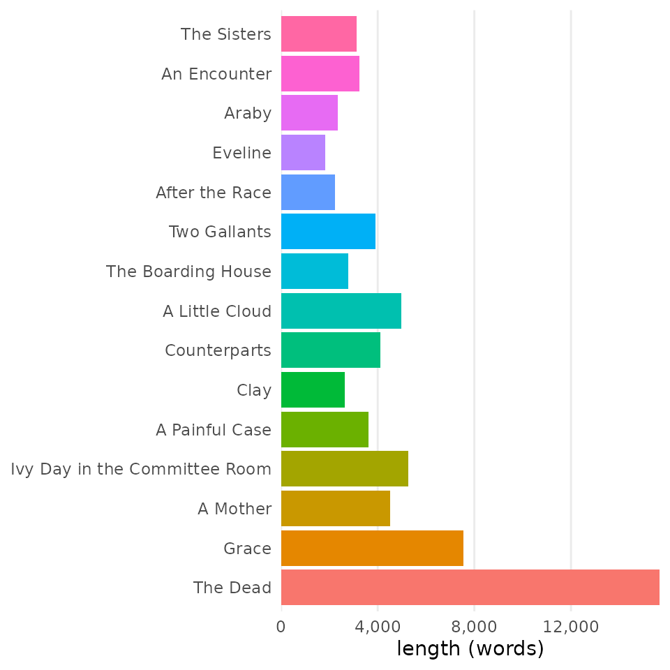
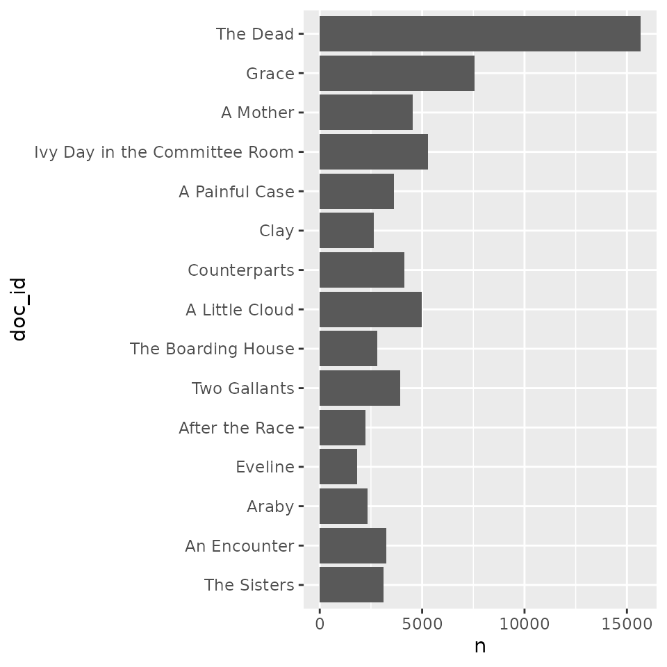
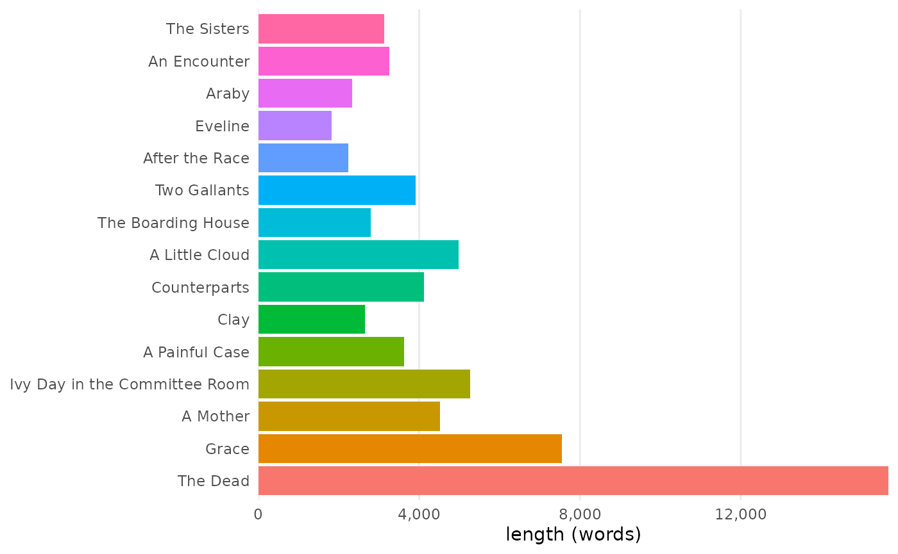
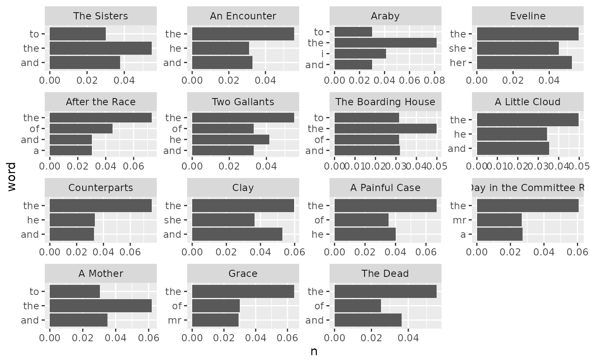
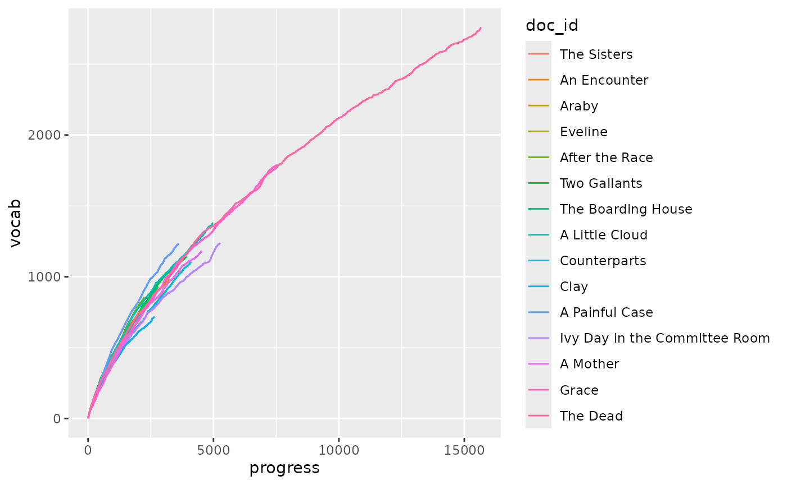
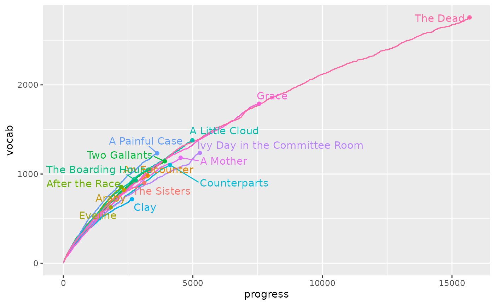

Vectorized functions
with custom tables and figures
Source:vignettes/articles/03-skills-ramp.Rmd
03-skills-ramp.Rmdtmtyro is optimized for a fast start, speeding users along a standard workflow made possible by tidytext and the tidyverse packages on which it’s built. But it also offers a pathway for growth by providing vectorized functions for use in a larger ecosystem of tools and simplifying the transition to text mining for anyone familiar with those tools.
Loading a corpus
Regardless of a user’s starting point, tmtyro’s main verbs for gathering and preparing a corpus will prove useful:
library(dplyr)
#> Error in get(paste0(generic, ".", class), envir = get_method_env()) :
#> object 'type_sum.accel' not found
library(ggplot2)
library(gt)
library(tmtyro)
corpus_dubliners <- get_gutenberg_corpus(2814) |>
load_texts(lemma = TRUE, pos = TRUE) |>
identify_by(part) |>
standardize_titles()
corpus_dubliners
#> # A tibble: 67,885 × 7
#> doc_id title author part word pos lemma
#> <fct> <chr> <chr> <chr> <chr> <chr> <chr>
#> 1 The Sisters Dubliners Joyce, James THE SISTERS there EX there
#> 2 The Sisters Dubliners Joyce, James THE SISTERS was VBD be
#> 3 The Sisters Dubliners Joyce, James THE SISTERS no DT no
#> 4 The Sisters Dubliners Joyce, James THE SISTERS hope NN hope
#> 5 The Sisters Dubliners Joyce, James THE SISTERS for IN for
#> 6 The Sisters Dubliners Joyce, James THE SISTERS him PRP him
#> 7 The Sisters Dubliners Joyce, James THE SISTERS this DT this
#> 8 The Sisters Dubliners Joyce, James THE SISTERS time NN time
#> 9 The Sisters Dubliners Joyce, James THE SISTERS it PRP it
#> 10 The Sisters Dubliners Joyce, James THE SISTERS was VBD be
#> # ℹ 67,875 more rowsAdding columns with dplyr
Beyond this point, anyone familiar with common tidyverse packages
like dplyr and ggplot2 might forge their own path. For instance, while
tmtyro offers a selection of verbs for adding new columns—all helpfully
beginning with add_...()—the dplyr way to add columns is
with mutate(). To support this workflow, tmtyro offers
functions for working with columns as vectors, too.
Word count and frequency
The main path for adding a column of word frequencies is with the
add_frequency() function. Users familiar with dplyr can
instead use mutate() paired with
get_frequency():
corpus_dubliners |>
select(doc_id, word, lemma) |>
mutate(
count_word = get_frequency(word),
count_lemma = get_frequency(lemma))
#> # A tibble: 67,885 × 5
#> doc_id word lemma count_word count_lemma
#> <fct> <chr> <chr> <int> <int>
#> 1 The Sisters there there 168 168
#> 2 The Sisters was be 1169 2146
#> 3 The Sisters no no 168 168
#> 4 The Sisters hope hope 14 26
#> 5 The Sisters for for 508 508
#> 6 The Sisters him him 494 494
#> 7 The Sisters this this 124 173
#> 8 The Sisters time time 114 135
#> 9 The Sisters it it 604 604
#> 10 The Sisters was be 1169 2146
#> # ℹ 67,875 more rowsThese frequencies can just as easily be reported as percentages
relative to the whole, using
get_frequency(percent = TRUE):
corpus_dubliners |>
select(doc_id, word, lemma) |>
mutate(
count_word = get_frequency(word, percent = TRUE),
count_lemma = get_frequency(lemma, percent = TRUE))
#> # A tibble: 67,885 × 5
#> doc_id word lemma count_word count_lemma
#> <fct> <chr> <chr> <dbl> <dbl>
#> 1 The Sisters there there 0.00247 0.00247
#> 2 The Sisters was be 0.0172 0.0316
#> 3 The Sisters no no 0.00247 0.00247
#> 4 The Sisters hope hope 0.000206 0.000383
#> 5 The Sisters for for 0.00748 0.00748
#> 6 The Sisters him him 0.00728 0.00728
#> 7 The Sisters this this 0.00183 0.00255
#> 8 The Sisters time time 0.00168 0.00199
#> 9 The Sisters it it 0.00890 0.00890
#> 10 The Sisters was be 0.0172 0.0316
#> # ℹ 67,875 more rowsOf course, these frequencies relate to the entire corpus. To get
document-level numbers, use the dplyr functions group_by()
and ungroup() around mutate():
corpus_dubliners <- corpus_dubliners |>
select(doc_id, word)
dubliners_count <- corpus_dubliners |>
group_by(doc_id) |>
mutate(
n = get_frequency(word),
freq = get_frequency(word, percent = TRUE)) |>
ungroup()
dubliners_count
#> # A tibble: 67,885 × 4
#> doc_id word n freq
#> <fct> <chr> <int> <dbl>
#> 1 The Sisters there 15 0.0048
#> 2 The Sisters was 57 0.0182
#> 3 The Sisters no 16 0.00512
#> 4 The Sisters hope 1 0.00032
#> 5 The Sisters for 32 0.0102
#> 6 The Sisters him 43 0.0138
#> 7 The Sisters this 6 0.00192
#> 8 The Sisters time 3 0.00096
#> 9 The Sisters it 40 0.0128
#> 10 The Sisters was 57 0.0182
#> # ℹ 67,875 more rowsVocabulary richness
tmtyro offers add_vocabulary() for adding columns
devoted to vocabulary growth, uniqueness, and ratios of lexical
diversity. When using mutate(), these features are handled
by testing functions like is_new() and
is_hapax() and measuring functions like
get_cumulative_vocabulary(), get_ttr(), and
get_hir(). As with word count, it’s usually best to
calculate values grouped by document using group_by() and
ungroup():
dubliners_vocab <- corpus_dubliners |>
group_by(doc_id) |>
mutate(
new_word = is_new(word),
hapax_word = is_hapax(word),
vocab = get_cumulative_vocabulary(word),
ttr = get_ttr(word),
hir = get_hir(word)) |>
ungroup()
dubliners_vocab
#> # A tibble: 67,885 × 7
#> doc_id word new_word hapax_word vocab ttr hir
#> <fct> <chr> <lgl> <lgl> <int> <dbl> <dbl>
#> 1 The Sisters there TRUE FALSE 1 1 0
#> 2 The Sisters was TRUE FALSE 2 1 0
#> 3 The Sisters no TRUE FALSE 3 1 0
#> 4 The Sisters hope TRUE TRUE 4 1 0.25
#> 5 The Sisters for TRUE FALSE 5 1 0.2
#> 6 The Sisters him TRUE FALSE 6 1 0.167
#> 7 The Sisters this TRUE FALSE 7 1 0.143
#> 8 The Sisters time TRUE FALSE 8 1 0.125
#> 9 The Sisters it TRUE FALSE 9 1 0.111
#> 10 The Sisters was FALSE FALSE 9 0.9 0.1
#> # ℹ 67,875 more rowsSlower than these other methods, get_htr() offers more
than is available in add_vocabulary(), returning the
hapax-token ratio. This method can be slower, so be careful when
applying it to a large corpus
dubliners_vocab <-
dubliners_vocab |>
select(doc_id, word, ttr, hir) |>
filter(doc_id %in% c("The Sisters", "An Encounter")) |>
group_by(doc_id) |>
mutate(
htr = get_htr(word)
) |>
ungroup()
dubliners_vocab |>
# skip the first few lines
{\(x) x[-c(1:6),]}()
#> # A tibble: 6,374 × 5
#> doc_id word ttr hir htr
#> <fct> <chr> <dbl> <dbl> <dbl>
#> 1 The Sisters this 1 0.143 1
#> 2 The Sisters time 1 0.125 1
#> 3 The Sisters it 1 0.111 1
#> 4 The Sisters was 0.9 0.1 0.8
#> 5 The Sisters the 0.909 0.0909 0.818
#> 6 The Sisters third 0.917 0.167 0.833
#> 7 The Sisters stroke 0.923 0.231 0.846
#> 8 The Sisters night 0.929 0.214 0.857
#> 9 The Sisters after 0.933 0.2 0.867
#> 10 The Sisters night 0.875 0.188 0.75
#> # ℹ 6,364 more rowsDictionary Matching
While add_dictionary() can manage adding columns
matching a dictionary to a column like word or
lemma, the get_match() function will return
the dictionary match for any word or vector. It’s used to add a column
with dplyr’s mutate() like this:
emoji_weather <- make_dictionary(
list(
"️☔️" = c("rain", "rains", "rainy", "raining"),
"️⛈️" = c("storm", "storms", "stormy", "storming"),
"☁️" = c("cloud", "clouds", "cloudy"),
"🌞" = c("sun", "sunny"),
"🌫️" = c("fog", "fogs", "foggy", "mist", "misty"),
"🌬️" = c("wind", "winds", "windy"),
"️❄️" = c("snow", "snows", "snowing")),
name = "weather")
dubliners_weather <- corpus_dubliners |>
mutate(weather = get_match(word, emoji_weather))
dubliners_weather |>
# show only one story and skip a few hundred words
filter(doc_id == "The Dead") |>
filter(row_number() > 602)
#> # A tibble: 15,076 × 3
#> doc_id word weather
#> <fct> <chr> <chr>
#> 1 The Dead he NA
#> 2 The Dead stood NA
#> 3 The Dead on NA
#> 4 The Dead the NA
#> 5 The Dead mat NA
#> 6 The Dead scraping NA
#> 7 The Dead the NA
#> 8 The Dead snow ️❄️
#> 9 The Dead from NA
#> 10 The Dead his NA
#> # ℹ 15,066 more rows
dubliners_weather |>
drop_na()
#> # A tibble: 53 × 3
#> doc_id word weather
#> <fct> <chr> <chr>
#> 1 The Sisters clouds ☁️
#> 2 The Sisters sunny 🌞
#> 3 The Sisters sun 🌞
#> 4 The Sisters clouds ☁️
#> 5 An Encounter storm ️⛈️
#> 6 An Encounter sunny 🌞
#> 7 An Encounter sun 🌞
#> 8 An Encounter clouds ☁️
#> 9 Araby rainy ️☔️
#> 10 Araby rain ️☔️
#> # ℹ 43 more rowsSentiment
Matching sentiment with get_sentiment() just uses a
special kind of dictionary matching:
corpus_dubliners |>
mutate(
sent_1 = get_match(word, tidytext::get_sentiments("bing")),
sent_2 = get_sentiment(word, "bing")) |>
drop_na()
#> # A tibble: 3,786 × 4
#> doc_id word sent_1 sent_2
#> <fct> <chr> <chr> <chr>
#> 1 The Sisters evenly positive positive
#> 2 The Sisters dead negative negative
#> 3 The Sisters darkened negative negative
#> 4 The Sisters blind negative negative
#> 5 The Sisters idle negative negative
#> 6 The Sisters strangely negative negative
#> 7 The Sisters like positive positive
#> 8 The Sisters like positive positive
#> 9 The Sisters sinful negative negative
#> 10 The Sisters fear negative negative
#> # ℹ 3,776 more rowsTf-idf
The get_tf() function offers a shorthand alias to
get_frequency(percent = TRUE). Importantly, this frequency
reports values for the whole of a group, so it may often be necessary to
use group_by() and ungroup():
dubliners_tfidf <- corpus_dubliners |>
group_by(doc_id) |>
mutate(
tf = get_tf(word)) |>
ungroup()
dubliners_tfidf
#> # A tibble: 67,885 × 3
#> doc_id word tf
#> <fct> <chr> <dbl>
#> 1 The Sisters there 0.0048
#> 2 The Sisters was 0.0182
#> 3 The Sisters no 0.00512
#> 4 The Sisters hope 0.00032
#> 5 The Sisters for 0.0102
#> 6 The Sisters him 0.0138
#> 7 The Sisters this 0.00192
#> 8 The Sisters time 0.00096
#> 9 The Sisters it 0.0128
#> 10 The Sisters was 0.0182
#> # ℹ 67,875 more rowsSimpler is to use get_tf_by(), which accepts a string
and a grouping variable like doc_id. It works well with
get_idf_by() to calculate the inverse document frequency
for each term. Lastly, multiplying these columns together results in
tf-idf:
dubliners_tfidf <- corpus_dubliners |>
mutate(
tf = get_tf_by(word, doc_id),
idf = get_idf_by(word, doc_id),
tf_idf = tf * idf)
dubliners_tfidf
#> # A tibble: 67,885 × 5
#> doc_id word tf idf tf_idf
#> <fct> <chr> <dbl> <dbl> <dbl>
#> 1 The Sisters there 0.0048 0 0
#> 2 The Sisters was 0.0182 0 0
#> 3 The Sisters no 0.00512 0 0
#> 4 The Sisters hope 0.00032 0.511 0.000163
#> 5 The Sisters for 0.0102 0 0
#> 6 The Sisters him 0.0138 0 0
#> 7 The Sisters this 0.00192 0.0690 0.000132
#> 8 The Sisters time 0.00096 0 0
#> 9 The Sisters it 0.0128 0 0
#> 10 The Sisters was 0.0182 0 0
#> # ℹ 67,875 more rowsAlternatively, get_tfidf_by() simplifies the process to
one step:
dubliners_tfidf |>
select(doc_id, word, tf_idf) |>
mutate(
tf_idf2 = get_tfidf_by(word, doc_id)
)
#> # A tibble: 67,885 × 4
#> doc_id word tf_idf tf_idf2
#> <fct> <chr> <dbl> <dbl>
#> 1 The Sisters there 0 0
#> 2 The Sisters was 0 0
#> 3 The Sisters no 0 0
#> 4 The Sisters hope 0.000163 0.000163
#> 5 The Sisters for 0 0
#> 6 The Sisters him 0 0
#> 7 The Sisters this 0.000132 0.000132
#> 8 The Sisters time 0 0
#> 9 The Sisters it 0 0
#> 10 The Sisters was 0 0
#> # ℹ 67,875 more rowsPreparing tables with dplyr and gt
In addition to adding new columns, tmtyro’s functions like
add_vocabulary() and add_sentiment() also
prepare objects to work easily with tabulize(). Users who
wish to prepare similar tables manually will need to become familiar
with a package like gt, allowing for nearly limitless customization. A
few methods for creating and modifying gt tables are shown below, but
more are found in package
documentation.
Corpus details
By default, a corpus prepared by tmtyro will tabulize()
into a table showing word counts for each document. A simple version of
this can be prepared by hand with very little effort:
| doc_id | n |
|---|---|
| The Sisters | 3125 |
| An Encounter | 3255 |
| Araby | 2332 |
| Eveline | 1829 |
| After the Race | 2235 |
| Two Gallants | 3916 |
| The Boarding House | 2793 |
| A Little Cloud | 4981 |
| Counterparts | 4118 |
| Clay | 2648 |
| A Painful Case | 3622 |
| Ivy Day in the Committee Room | 5269 |
| A Mother | 4526 |
| Grace | 7558 |
| The Dead | 15678 |
Once the table is prepared, gt allows for further tweaking—for
instance, to format word counts for readability, hide the
doc_id column header, and rename n as
words:
gt_details |>
fmt_integer(n) |>
cols_label(
doc_id = "",
n = "words")| words | |
|---|---|
| The Sisters | 3,125 |
| An Encounter | 3,255 |
| Araby | 2,332 |
| Eveline | 1,829 |
| After the Race | 2,235 |
| Two Gallants | 3,916 |
| The Boarding House | 2,793 |
| A Little Cloud | 4,981 |
| Counterparts | 4,118 |
| Clay | 2,648 |
| A Painful Case | 3,622 |
| Ivy Day in the Committee Room | 5,269 |
| A Mother | 4,526 |
| Grace | 7,558 |
| The Dead | 15,678 |
Word frequencies
The standard workflow for preparing a polished table of
high-frequency word counts with
tmtyro—add_frequency() |> tabulize()—will easily show a
few of the most used words in each document. To use
get_frequency() when adding columns for word counts, a
chain of functions will prepare a summary
table—group_by() |> summarize() |> ungroup() |> slice_max().
Once it’s ready, gt() will do the rest.
dubliners_count <- dubliners_count |>
group_by(doc_id, word) |>
summarize(n = max(n)) |>
ungroup() |>
slice_max(
order_by = n,
by = doc_id,
n = 3) # show three words each
gt_counts <- dubliners_count |>
# limit to three stories for a shorter display
filter(doc_id %in% c("The Sisters", "An Encounter", "The Dead")) |>
gt()
gt_counts| doc_id | word | n |
|---|---|---|
| The Sisters | the | 171 |
| The Sisters | and | 118 |
| The Sisters | to | 94 |
| An Encounter | the | 181 |
| An Encounter | and | 107 |
| An Encounter | he | 101 |
| The Dead | the | 866 |
| The Dead | and | 570 |
| The Dead | of | 395 |
The cols_label() function from gt can adjust headers,
and tmtyro’s collapse_rows() function cleans up repeated
values in the first column:
gt_counts |>
cols_label(doc_id = "") |>
collapse_rows(doc_id)| word | n | |
|---|---|---|
| The Sisters | the | 171 |
| and | 118 | |
| to | 94 | |
| An Encounter | the | 181 |
| and | 107 | |
| he | 101 | |
| The Dead | the | 866 |
| and | 570 | |
| of | 395 |
Choosing to adjust things manually introduces a steeper learning curve, but it also allows for greater customization:
dubliners_count |>
filter(doc_id %in% c("The Sisters", "An Encounter", "The Dead")) |>
gt(groupname_col = "doc_id") |>
cols_label(
word = "") |>
data_color(columns = n, palette = "PuBuGn") |>
tab_style(
style = cell_text(weight = "bold"),
locations = cells_row_groups())| n | |
|---|---|
| The Sisters | |
| the | 171 |
| and | 118 |
| to | 94 |
| An Encounter | |
| the | 181 |
| and | 107 |
| he | 101 |
| The Dead | |
| the | 866 |
| and | 570 |
| of | 395 |
Dictionary matches, including for sentiment, follow the same pattern.
Vocabulary richness
A similar manual workflow can be used to prepare tables of vocabulary richness:
gt_vocab <- corpus_dubliners |>
filter(doc_id %in% c("The Sisters", "An Encounter", "The Dead")) |>
group_by(doc_id) |>
summarize(
length = n(),
vocab_count = sum(is_new(word)),
ttr = last(get_ttr(word)),
hapax_count = sum(is_hapax(word)),
htr = last(get_hir(word))) |>
ungroup() |>
gt()
gt_vocab| doc_id | length | vocab_count | ttr | hapax_count | htr |
|---|---|---|---|---|---|
| The Sisters | 3125 | 901 | 0.2883200 | 557 | 0.1782400 |
| An Encounter | 3255 | 982 | 0.3016897 | 624 | 0.1917051 |
| The Dead | 15678 | 2757 | 0.1758515 | 1580 | 0.1007782 |
Here, tab spanners can be added to approximate the version created by a typical tmtyro workflow:
gt_vocab |>
tab_spanner(
label = "vocabulary",
columns = c("vocab_count", "ttr")) |>
tab_spanner(
label = "hapax",
columns = c("hapax_count", "htr")) |>
cols_label(
vocab_count = "total",
ttr = "ratio",
hapax_count = "total",
htr = "ratio") |>
fmt_number(c(ttr, htr), decimals = 3)| doc_id | length |
vocabulary
|
hapax
|
||
|---|---|---|---|---|---|
| total | ratio | total | ratio | ||
| The Sisters | 3125 | 901 | 0.288 | 557 | 0.178 |
| An Encounter | 3255 | 982 | 0.302 | 624 | 0.192 |
| The Dead | 15678 | 2757 | 0.176 | 1580 | 0.101 |
Extending tabulize()
Learning some of gt’s functions can also be helpful for customizing
outputs derived from tabulize(), which are just gt objects.
To demonstrate the usefulness of customization, we can create a short
table of word counts by selecting a few titles and showing the default
output from tabulize():
some_docs <- unique(corpus_dubliners$doc_id)[c(1:3, 12, 15)]
gt_1 <- corpus_dubliners |>
filter(doc_id %in% some_docs) |>
tabulize()
gt_1| words | |
|---|---|
| The Sisters | 3,125 |
| An Encounter | 3,255 |
| Araby | 2,332 |
| Ivy Day in the Committee Room | 5,269 |
| The Dead | 15,678 |
This table is functional but not necessarily pretty. While beauty is subjective, customization makes it possible to aim for something clean like this:
gt_1 |>
tab_style(
style = cell_borders(
sides = "all",
color = NULL),
locations = cells_body()) |>
tab_style(
style = cell_text(size = pct(70)),
locations = cells_column_labels()
) |>
cols_align(
align = "right",
columns = doc_id) |>
opt_css(
css = ".gt_col_headings {border-bottom-color: #FFFFFF !important;}"
)| words | |
|---|---|
| The Sisters | 3,125 |
| An Encounter | 3,255 |
| Araby | 2,332 |
| Ivy Day in the Committee Room | 5,269 |
| The Dead | 15,678 |
Preparing figures with ggplot2
Vectorized functions beginning get_...() and
is...() won’t work well with tmtyro’s
visualize() function, which is made for the standard
workflow. Those visualizations are all built with ggplot2, so they can
be recreated with a little effort and nearly limitless customization.
Consult the ggplot2
documentation to learn more methods than can be demonstrated
here.
Corpus details
By default, a corpus prepared with load_texts() will
visualize() into a bar chart showing word counts for each
document. Preparing something manually is pretty simple, even if it
doesn’t compare well to the default output:
# default output
visualize(corpus_dubliners)
# manual output
corpus_dubliners |>
count(doc_id) |>
ggplot(aes(
x = n,
y = doc_id)) +
geom_col()
Among other things, visualize() preserves the order of
documents from top to bottom, adjusts labeling, and adds some settings
for theme and color. Alone, each is a simple change. But everything adds
up when polishing publication-ready graphs, including customizing
gridlines, adjusting label spacing, and formatting numbers:
corpus_dubliners |>
count(doc_id) |>
# reverse doc_id order
mutate(doc_id = forcats::fct_rev(doc_id)) |>
ggplot(aes(
x = n,
y = doc_id,
# add color
fill = doc_id)) +
geom_col(show.legend = FALSE) +
# adjust number format and shift y-axis labels
scale_x_continuous(
labels = scales::label_comma(),
expand = c(0, 0)) +
# change the theme background
theme_minimal() +
# adjust labels
labs(
x = "length (words)",
y = NULL) +
# adjust grid lines
theme(
panel.grid.minor.x = element_blank(),
panel.grid.major.y = element_blank(),
panel.grid.minor.y = element_blank())
Word frequencies
When used after add_frequency(),
visualize() will prepare a faceted graph of some of the top
word frequencies for each document. To create something similar
manually, using mutate() with a vectorized function like
get_frequency() or get_tf_by(), it’s necessary
to prepare a table with summarize() and
slice_max() before piping it to ggplot():
corpus_dubliners |>
mutate(
n = get_tf_by(word, doc_id)) |>
group_by(doc_id, word) |>
summarize(n = max(n)) |>
ungroup() |>
slice_max(
order_by = n,
by = doc_id,
n = 3) |> # show 3 words each
ggplot(aes(n, word)) +
geom_col() +
facet_wrap(vars(doc_id), scales = "free")
The resulting graph can be further customized with ggplot2’s functions.
Vocabulary richness
The default visualizations tmtyro makes after
add_vocabulary() are highly customized. It isn’t hard to
make a simple version after a vectorized function like
get_cumulative_vocabulary(), but this version can lack
readability:
corpus_dubliners |>
group_by(doc_id) |>
mutate(
vocab = get_cumulative_vocabulary(word),
progress = row_number()) |>
ungroup() |>
ggplot(aes(
x = progress,
y = vocab,
color = doc_id)) +
geom_line()
Adding direct labels is often worth the effort:
dubliners_vocab <- corpus_dubliners |>
group_by(doc_id) |>
mutate(
vocab = get_cumulative_vocabulary(word),
progress = row_number()) |>
ungroup()
# table of labels and locations
document_labels <- dubliners_vocab |>
group_by(doc_id) |>
summarize(
vocab = last(vocab),
progress = last(progress)) |>
ungroup()
dubliners_vocab |>
ggplot(aes(
x = progress,
y = vocab,
color = doc_id)) +
geom_line() +
geom_point(
data = document_labels) +
# avoid overlapping labels
ggrepel::geom_text_repel(
data = document_labels,
aes(label = doc_id)) +
theme(legend.position = "none")